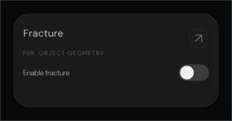
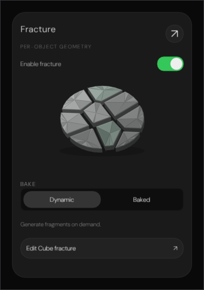
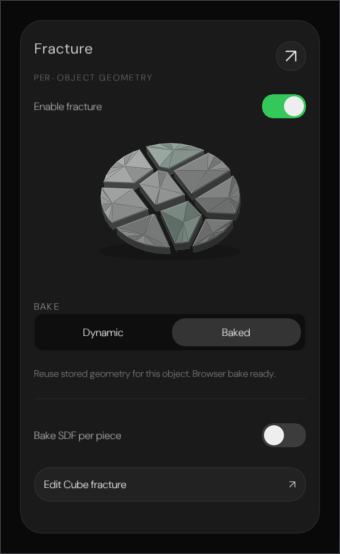
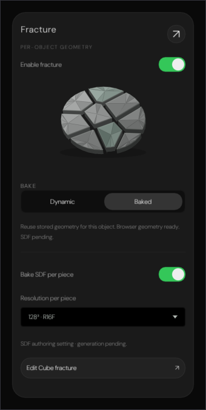
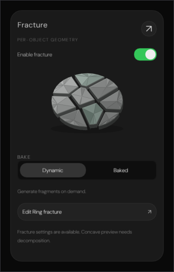

Every pixel below came out of a real ImGui draw list, rasterised on the CPU and written to PNG by
Exhibits/Workbench/Fracture/NativeFractureCard.cpp. Nothing here is a mock-up.
The shipped markup is in the bundle at byte 4623565 and its CSS in the bundle's inlined
<style>; on disk that is FracturePanel.jsx, which
Inspectors.jsx hangs off the end of the geometry sheet, together with the shaded solid from
FractureEditor/FractureProjection.js and the clamps in FractureSpecification.js.
Nothing in Engine/ carried any of it before.
Two things here a screenshot cannot show. The diagram is a real Voronoi diagram — nine seeds clipped against a 36-gon by half-planes, each cell shaded from its own centroid and lifted onto a sphere — so the proof sums the nine cell areas and compares them with the perimeter's own: they tile it to within 1e−6. And the card is a CSS block flow, so the checks pin the collapsed margins rather than the sums: BAKE sits 18 px under the diagram, not the 26 that adding the two margins would give, and the SDF block's border breaks the collapse so its switch keeps a full 20.
Verified against the bundle, not the sources.
Experimental/ProjectZeroEditor/index.html is the reference: a built, minified,
self-contained file in which the depot kit is an escaped JS string and Editor.css is
inlined. Reading the .js and .css beside it is not the same thing, so
Exhibits/Workbench/BundleParity.py now pulls the shipped code out of the bundle and
asserts that every literal and every numeric constant this port depends on is present there
— 199 checks across the cloud panel, the cloud deck and the fracture card.
Executed, not illustrated

Disabled, the card is a title, an eyebrow, a dimmed expand button and one switch. The header is 36.25 px because the stacked title and eyebrow are taller than the 30 px button beside them.

The switch opens the shaded solid, the BAKE pair and the status line. Dynamic has no second clause: Generate fragments on demand.

Baked adds the second clause and the SDF block above its hairline. A stored bake whose signature still matches reads Browser bake ready; a stale one sends you to the editor instead.

The deepest the card goes: the resolution field appears, the status wraps to two lines, and the clause changes again to Browser geometry ready. SDF pending. Only 32, 64 and 128 are offered; anything else falls back to 64 rather than clamping.

Only a cube, sphere, cylinder or cone carries a convex preview. A torus is named specifically — Concave preview needs decomposition — and anything else is simply pending. The note's two lines add 48 px over the same card on a cube.